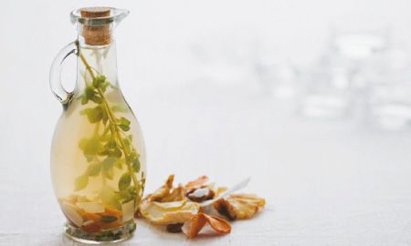

Cómo Hacer Cócteles Fáciles y Buenos: Mejores Recetas
2021.06.26 11:10
Saltar al contenido Menú BARATAS Guía de Compra ¿Licuadora o batidora? ¿Para qué sirve? Tipos De Prensado en Frío Fáciles de limpiar Lentas Manuales Pequeñas Portátiles Profesionales Marcas Aicok BioChef Bosch Braun Cecotec Jata Juissen Kenwood Moulinex Ninja Philips Princess Orbegozo Oster Russell Hobbs Silvercrest SMEG Taurus Ufesa Vitamix Las mejores Cecotec Extreme Titanium 19000 Cecojuicer Pro Moulinex Infiny Juice Moulinex Vitae Philips HR1832/00 Comparativas Alcampo Carrefour El Corte Inglés Hipercor Media Markt Worten Otros productos Báscula de cocina Cortador de Verduras Cortafiambres Creperas Envasadora al Vacío Extractor de Zumos Deshidratador de alimentos Gofreras Mandolinas Pelador de Piña Sous Vide Sacacorchos eléctrico Vaporeras Eléctricas Yogurteras Recetas
Cómo hacer cócteles para fiestas y parecer profesional
Un encuentro con amigos, una reunión familiar o simplemente una noche de relax nunca estarán completas sin una buena copa con la que brindar . La costumbre de compartir un buen brindis durante cualquier celebración se ha mantenido durante siglos.
Los cócteles se preparan fusionando varios sabores para despertar los sentidos y deleitar el paladar. Se distinguen de otras bebidas porque son creados como todo un concepto que reúne: colores, sabores, decoración, textura y mucho más.
Hoy te traigo los mejores consejos para hacer cocktails y las recetas de cócteles sencillos que estabas esperando.
Contenido
1 Cómo hacer cócteles fáciles: consejos básicos 2 Lista de tipos de cócteles 3 Cómo decorar un cocktail 4 Herramientas para preparar el cóctel perfecto 5 ¿Remover, agitar o mezclar? 6 Los mejores cócteles fáciles de hacer para fiestas 6.1 Tequila sunrise 6.2 Caipiroska de pepino 6.3 Daiquiri 6.4 Cocktail Negroni 6.5 Gin tonic de frutos rojos 6.6 San Francisco 6.7 Margarita 6.8 Cóctel de fruta 6.9 Cosmopolitan 6.10 Bloody Mary 7 Más recetas de bebidas en tu licuadoraCómo hacer cócteles fáciles: consejos básicos
A priori puede parecer algo complejo elaborar ciertos cócteles, pero después de este post verás cómo son más sencillos de lo que parece. Lo bueno de las recetas de cócteles es que puedes modificar cantidades a tu gusto y al de tus invitados.
La preparación de cócteles puede resultar un proceso divertido y creativo . Poco a poco irás perfeccionando y te animarás a jugar con los ingredientes, las texturas y la decoración. ¿Quieres saber cómo hacer cócteles? ¡Acompáñame!
Cualquier bartender guardará bajo llave los secretos para conseguir unos cócteles extraordinarios. En estas líneas descubriremos alguno de los ases en la manga que esconden nuestros barman.
Para decorar con una cáscara de limón, naranja o pomelo , se sugiere frotar la cáscara por todo el borde de la copa para despertar el aroma y aportar un sabor muy fresco y especial. El café es una bebida que puede ser incorporada a los cócteles tanto fríos como calientes, para ofrecer un sabor muy agradable y sofisticado . Las medidas más comunes en la coctelería son la onza y la medida , pero también se habla de parte, pizca y dash, entre otras. Una medida es equivalente a 50 milímetros, mientras que una onza equivale a 29.5 mililitros. Una fórmula que no falla para crear cócteles muy originales es mezclar dos partes de un destilado más una parte de endulzante, (como licor dulce, azúcar o miel) más una parte de un cítrico o un cremoso. Cuando se busque crear un efecto espumoso se recomienda batir la clara de un huevo vigorosamente por al menos 20 segundos, previo a agregar el hielo a la coctelera.
Lista de tipos de cócteles
Existen cientos de tipos tragos o cócteles que se han creado con la combinación de sabores, licores, frutas, esencias y texturas. Todos estos ingredientes deben ser de una calidad contrastada. Algunos de los más importantes son:
Frozen : Ideales para el verano, estos cócteles se distinguen por estar casi congelados, a punto de nieve . Aquí el hielo picado en abundancia es la clave. Pueden servirse con o sin alcohol. Fizzes : Estos son cócteles de los llamados largos, que se caracterizan por ser burbujeantes. Son servidos con zumo de cítrico, azúcar y la clara de un huevo que se mezcla con ginebra o cualquier otra bebida alcohólica y una porción de soda. Cups: Son bebidas que tienen como base los vinos blancos, las sidras y licores acompañados de frutas frescas troceadas , ligeramente congelada. La mejor forma de presentarlo es en recipientes amplios y en tazas pequeñas. Coolers: Con una reducida dosis de alcohol , son servidos en vaso largo con cubitos de hielos . Van decorados con cáscaras de cítricos como limón, lima o naranja cortadas en espiral. Grogs: Tiene una base de agua con azúcar caliente , a la que se le agrega licor, generalmente ron, kirsch o coñac . Se acompañan de algún aromatizante, como el limón. Crustas: Las bebidas que son servidas en copas , decoradas con el borde azucarado . El mejor ejemplo es el margarita. Egg nogs: Se trata de bebidas alcohólicas que incorporan a su preparación leche, nuez moscada y huevo . Se sirven frías o calientes. Juleps: Nos ofrecen sorbos refrescantes ya que vienen aderezados con menta, con Bourbon de Kentucky, azúcar y hielo picado grueso. También puede sustituirse por whisky escocés, ron e incluso brandy. Sangrías: Entran dentro de la clasificación de los ponches, con bases de vinos tintos al que se le agregan frutas frescas cortadas en trozos. Sours: Estos se preparan con una buena cantidad de limón y azúcar combinados con cualquier whisky, en especial Bourbon.
Cómo decorar un cocktail
Las guarniciones pueden marcar la diferencia entre un cóctel bueno y otro excepcional, aportando al comensal una agradable impresión tanto al gusto como a la vista.
La guarnición depende del tipo de cóctel que se sirva, por ejemplo:
Para los fríos: se suelen usar cherries, limón, naranja, pepino, aceitunas, coco, sal, melón, apio, piña, sandía, menta en hojas, fresas, crema batida, fresas y cubos de hielo o frutas congeladas. Para las bebidas calientes funcionan muy bien las virutas o rizos de chocolate, café o canela en polvo o en astilla, galletas, vainas de vainillas, anís estrellado o cubos de azúcar.Herramientas para preparar el cóctel perfecto
Los materiales que no deben faltar detrás de la barra son: los mezcladores o cocteleras , el sacacorchos, destapadores, colador de gusanillo, batidor , colador para pulpa, cuchillos mondadores, dosificadores , exprimidores, martillo, o mondadientes. Normalmente, todo esto viene incluido en el típico set de coctelera que venden en Amazon:
HOBFU Cocktail Bar Set Kit de coctelera de 12 Piezas con coctelera Profesional de Bartender, colador, Jigger, Licor Pourers, Acero Ver PrecioEn cuanto a la cristalería, estas la conforman la copa margarita, copa de Brandy, copa de Martini, copa de champán y copa cordial-formal.
bar@drinkstuff Juego de 6 copas de Martini u otros cócteles y bebidas, 175 ml, en vidrio resistente Este set contiene 6 vasos de Martini, Manhattan, cócteles cosmopolitas u otras bebidas. Capacidad: 175 ml, Altura: 14,8 cm, Diámetro: 10,6 cm, Peso: 185 g Vidrio de soda-lima Compatible con lavavajillas Este conjunto es perfecto para uso profesional y personal. Ver PrecioPor su parte, los tipos más comunes de vasos son: vaso hurricane, vaso largo, highball/tumbler, vaso pilsner: vaso Collins y zombie.
Copas para Piña Colada (450 ml, paquete de 6 unidades), en caja de regalo Classic tallo Pina Colada con un poco grande huracán de vidrio con forma de cuenco Material: vidrio sodocálcico Ideal para servir Classic Pina coladas, daiquiris o huracán cócteles En caja regalo hace ideal para regalo a los amantes de cóctel Se puede lavar en lavavajillas. Ver Precio¿Remover, agitar o mezclar?
Remover: es la acción de introducir un instrumento en la bebida para darle un suave movimiento giratorio. A gitar: hace referencia a la acción de introducir los ingredientes en una coctelera y agitar vigorosamente durante varios segundos. Mezclar: Es cuando se emplea una cuchara de bar para remover todos los ingredientes dentro de una coctelera.Los mejores cócteles fáciles de hacer para fiestas
Bien sea por diversión, conocimiento general o por querer tener ingresos extras, siempre es bueno saber cómo preparar un cóctel. Existe una amplia variedad de estas bebidas que llenan de alegría cualquier reunión o encuentro entre amigos.
Saber prepararlos no requiere de grandes destrezas, tan solo tener un buen sentido del gusto y una buena memoria . Si lo haces de forma profesional necesitarás una coctelera y un mezclador , entre otros, pero en tu casa, solo con los ingredientes necesarios y una licuadora bastarán para preparar unos cócteles profesionales. Descubre estas recetas de cóctel fáciles de hacer.
Tequila sunrise
Probablemente habrás oído hablar del Tequila Sunrise pero no sabes muy bien en qué consiste. Es un cóctel que surgió en los años 30 en Estados Unidos , y su nombre viene de que los colores finales del cóctel se asemejan a los de un amanecer.
Era una bebida bastante popular , sin embargo, dio el gran salto cuando una banda de rock llamada “Los Eagles” sacó una canción con el mismo nombre. Además, en una película de los 80 que lleva su nombre y se mostró como un camarero preparaba esta llamativa y deliciosa bebida.
Es una bebida perfecta para tomarla bien fría y servirla en un vaso largo o de tubo por su composición. Si buscas dejar a tus invitados con la boca abierta y deseando repetir, esta puede ser una muy buena opción.
Ingredientes
2 o 3 cubitos de hielo 60ml de tequila 1 chorro de granadina 180ml de zumo de naranjaPreparación
En un vaso largo, coloca los hielos y vierte el tequila sobre ellos. Añade el zumo de naranja y después agrega un chorro de granadina que se irá al fondo. Puedes servirlo decorado con una rodaja de naranja y/o una cereza.Caipiroska de pepino
Seguro que te suena el nombre de este cocktail para fiestas, ¿verdad? La “caipiroska” es una bebida que proviene de la Caipirinha de Brasil . Sin embargo, en lugar de tomarlo con cachaça, lo haremos con vodka.
Esta variante de la Caipirinha tiene muchas formas, pero en esta ocasión te enseñaré una de las ideas para cóctel fáciles de hacer con pepino , bastante original . ¿Te animas?
Ingredientes
45ml de vodka ¼ de pepino en rodajas 30ml de jarabe natural (endulzante) 1 limón cortado a rodajas 2 o 3 cubitos de hieloPreparación
En un vaso, añade el hielo, las rodajas de pepino y después el vodka. Seguidamente, añade el jarabe natural y un poco de agua si piensas que el sabor va a ser muy fuerte. Decora el vaso con rodajas de limón o pepino. También puedes mojar el borde del vaso con el limón.
Daiquiri
El Daiquiri es uno de los cócteles más conocidos y pedidos, pero, ¿sabes realmente de donde viene? Su origen se encuentra en Santiago de Cuba , donde un minero, a falta de ginebra, preparó a sus invitados una bebida con ron cubano, azúcar y zumo de limón .
Este trago con alcohol se popularizó como “Daiquiri” en nombre de la playa que estaba junto a las minas donde trabajaba. Se fue extendiendo por la Habana y Florida y de ahí al resto del mundo con la popularidad con la que se le conoce hoy en día.
Hay muchas variantes del Daiquiri con diferentes sabores : de fresa, de mango, de plátano… En esta ocasión aprenderás a hacer cócteles tradicionales con la receta original del Daiquiri.
Ingredientes
50ml de ron blanco 25ml de jugo de lima 2 o 3 hielos 1 cucharada de azúcarPreparación
Agrega en tu licuadora el zumo (si es recién exprimid o mejor), el azúcar y el ron. Añade también 2 o 3 cubitos grandes de hielo. Deja que la licuadora triture todo hasta conseguir una textura un poco más suave que el granizado.Cocktail Negroni
Este cóctel tiene una historia bastante conocida por los apasionados de estas bebidas. Surgió en Florencia en los años 20 en un café donde se reunían aristócratas y personajes célebres tanto de las artes como de otras disciplinas.
Un conde, llamado Camillo Negroni , estaba cansado de tomar siempre la misma bebida (un cóctel americano). Es por ello que le pidió al barman del lugar que sustituyese la soda por la ginebra y lo decorara con una rodaja de naranja y no de limón.
Ingredientes
20ml de vermut rojo dulce 20ml de gin 20ml de Campari HieloPreparación
En un vaso ancho y bajo, coloca 2 o 3 cubitos de hielo. Agrega el gin, el vermut y el campari. Remueve bastante con una Si quieres, adorna el vaso con una rodaja de naranja y disfruta de tu cóctel.
Gin tonic de frutos rojos
El gin tonic es una de esas bebidas con alcohol muy rápidas de preparar y un básico a la hora de pedir en discos y pubs. El cásico gin tonic se remonta a finales del siglo XIX y principios del XX gracias a un oficial británico para celebrar una victoria militar.
Sin embargo, con el tiempo han ido apareciendo variantes de esta bebida y una de ellas es la de los frutos rojos. Le dan un sabor mucho más dulce y diferente al clásico. ¿Quieres saber en qué consiste?
Ingredientes
50ml de ginebra 1 botellín de tónica 2 moras 2 frambuesasPreparación
Coloca en una copa 2 o 3 cubitos de hielo y añádele la ginebra. Agrega la tónica y los frutos rojos. Puedes exprimir un poco de lima para darle un toque de sabor diferente. Ya puedes disfrutar de un cóctel para fiestas, fácil y barato.San Francisco
Este es un cóctel sin alcohol muy conocido a nivel mundial. Sus colores hacen alegoría a las puestas de sol en la emblemática ciudad de San Francisco.
Ingredientes
Hielo 20ml zumo de naranja 20ml zumo de limón 20ml zumo de piña 20ml zumo de melocotón 15ml de zumo de granadina Azúcar 1 rodaja de limón o naranjaPreparación
Para prepararlo, debes escarchar previamente el borde del vaso con granadina y azúcar. Poner los zumos en la licuadora junto con la granadina y darle un leve giro. Verter el líquido en un vaso alto con hielo y para finalizar, decorar con una rodaja de limón o naranja.Margarita
Es uno de los cócteles favoritos del público común y tiene origen mexicano. Es súper fácil de hacer y rinde mucho.
Ingredientes
350 gramos de cubitos de hielo 100 gramos de azúcar 100 gramos de tequila blanco 40 gramos de Cointreau 2 limones sin cáscaras ni semillaPreparación
Agrega el tequila en la licuadora y añade el Cointreau junto a los limones y el azúcar . Mezclar por 20 segundos. Ahora añade el hielo y vuelve a mezclar por un minuto. Listo. Llena las copas y disfruta.De este cóctel hay varias modalidades , margarita con ron, sunrise, de fresa, y sin alcohol.
Cóctel de fruta
Este es un cóctel refrescante que puede ser tomado a cualquier hora del día, lo puedes tomar con o sin alcohol, usando las frutas de su preferencia.
Ingredientes
Zumo de piña natural Zumo de naranja natural Gaseosa Granadina Cubitos de hielo y piel de naranja Vodka o ron blanco al gustoPreparación
Vierte los zumos de las frutas escogidas en el vaso de una licuadora, añade los cubos de hielo , dale un giro rápido a la mezcla. Ahora se añade la gaseosa y la granadina mezclando nuevamente. Vierte el líquido en un vaso y decora con cáscara de naranja.Cosmopolitan
Un cóctel clásico con glamour y muy bebido en las altas esferas de la sociedad. Fue creado en Estados Unidos y se ha popularizado en todo el mundo.
Ingredientes
Hielo 45ml de Vodka 15ml de Cointreau Un golpe de zumo de arándanos 10 ml de zumo de limón o lima Cáscara de naranja para decorarPreparación
Unta la copa con limón y sal . Pon en la coctelera o licuadora el hielo, vodka, Cointreau, el zumo de limón , un poco de zumo de arándanos y mezclas durante 30 segundos. Vierte la bebida en una copa y decora con cáscara de limón.Bloody Mary
Este trago debe su nombre a la Reina María I de Inglaterra, apodada así por la guerra que mantuvo por años con los anglicanos.
Ingredientes
40 ml vodka 75 ml zumo de tomate 15 ml zumo de limón Salsa Worcestershire o salsa inglesa Dos gotitas Tabasco Sal HieloPreparación
Vierte en la licuadora abundante hielo , luego se añade en este orden el vodka, zumo de limón, sal, pimienta, la salsa Worcestershire y el tabasco , con todo en el recipiente, mezclar por 30 segundos, hasta que el hielo esté completamente triturado, sin dejar que se vuelva granizo. Decorar con un trozo de apio.Más recetas de bebidas en tu licuadora
Batidos de proteínas Batidos de espinacas Batidos de melocotón Zumos verdes adelgazantes Zumo de zanahoria sin licuadora Batidos con chía Café Helado Batidos quemagrasas Zumos Detox Batidos de pepino Zumos cold press Gazpacho de sandía Gazpacho Andaluz Baileys Casero Bebidas refrescantes de verano Licuados de verduras crudas Zumos para desayunar Zumo de tomate casero Pisco Sour 5 / 5 ( 1 voto ) ¿Nos compartes?
14 comentarios en «Cómo hacer cócteles para fiestas y parecer profesional»
Alvaro garcia enero 20, 2020 a las 5:33 pmGracias por la informacio, muchas bendiciones,
Responder Jose Luis marzo 8, 2020 a las 2:58 pmmuy buena información, pero quisiera saber un poco mas y otras recetas
Responder Sandy mayo 25, 2021 a las 4:21 amMe encantaron tus recetas tambien quisiera saber mas sobre los cocteles de colores
Responder Clara Crespo mayo 28, 2021 a las 8:59 am¡Hola Sandy! Me apunto lo de los cócteles de colores para futuras recetas. Gracias por visitarme 🙂
Responder jessica vergara mayo 7, 2020 a las 10:02 pmmuy entretenido saber mas de como se ven y las recetas de los cócteles.
Responder Jose mendez mayo 25, 2020 a las 8:50 pmEs muy buena estos consejos de variadas exquisitas recetas para aprender a hacer cócteles caseros .
Responder sergio mayo 26, 2020 a las 11:58 pmcomo preparar un trago sin hielo para luego envasarlo en una botella y venderlo tipo delivery
Responder Adriana Meres agosto 26, 2020 a las 10:03 pmMuchas gracias. Para mí como principiante y gomosa con esto de los cócteles, la información fue excelente: muy clara y precisa.
Responder Jenny Garcia Jimenez octubre 22, 2020 a las 12:23 amGracias por las recetas me gustaria saber como preparar mojitos y cocteles de colores turquesa morado verde cual es la combinacion y que ingredientes se utilizan gracias
Responder Edison González noviembre 15, 2020 a las 3:10 pmMe encanta tus recetas
Responder Clara Crespo noviembre 16, 2020 a las 8:37 am¡Gracias!
Responder Alex noviembre 28, 2020 a las 12:27 pmGracias por la información, ahora, manos a la obra y degústar
Responder Manu abril 27, 2021 a las 11:14 amBuena info. Muy útil para la gente 👍
Responder Clara Crespo mayo 28, 2021 a las 9:00 am¡Gracias Manu!
ResponderDeja un comentario Cancelar la respuesta
Métodos de pago y Gestión de envíos Política de privacidad Aviso Legal Quién Soy ContactoEl propietario de esta web Comprar-licuadora.com participa en el programa de afiliados de Amazon EU, un programa de publicidad para afiliados diseñado para ofrecer a sitios web un modo de obtener comisiones por publicidad, publicitando e incluyendo enlaces a Amazon.es. Amazon y el logo de Amazon son marcas registradas de Amazon.com. Inc. o sus afiliados.
© 2021 Comprar Licuadora: Análisis, Opiniones y Comparativas ¿Aceptas las cookies? Aceptar Aviso Legal y Política de Cookies CerrarPrivacy Overview
This website uses cookies to improve your experience while you navigate through the website. Out of these, the cookies that are categorized as necessary are stored on your browser as they are essential for the working of basic functionalities of the website. We also use third-party cookies that help us analyze and understand how you use this website. These cookies will be stored in your browser only with your consent. You also have the option to opt-out of these cookies. But opting out of some of these cookies may affect your browsing experience. Necessary Necessary Siempre activadoNecessary cookies are absolutely essential for the website to function properly. This category only includes cookies that ensures basic functionalities and security features of the website. These cookies do not store any personal information.
Non-necessary Non-necessaryAny cookies that may not be particularly necessary for the website to function and is used specifically to collect user personal data via analytics, ads, other embedded contents are termed as non-necessary cookies. It is mandatory to procure user consent prior to running these cookies on your website.
GUARDAR Y ACEPTAR- Cinco recetas de cócteles especiales para el frío de las .
- 16 ideas de Coctel frio | recetas de comida, recetas para .
- Los 5 mejores cócteles para combatir el frío este invierno
- Cócteles para quitar el frío del cuerpo | Recetas El Comidista .
- 63 ideas de Coctel frio | comida, aperitivos, recetas para cocinar
- Receta de Cóctel de café frío sin alcohol . - Pinterest
- Cócteles de invierno: receta y cómo hacer tragos y bebidas .
- Cómo Hacer Cócteles Fáciles y Buenos: Mejores Recetas
- Receta de Cóctel de café frío sin alcohol - Hogarmania
- Receta de Cóctel de café frío con alcohol - Hogarmania .
- Cinco recetas de cócteles especiales para el frío de las .
- 16 ideas de Coctel frio | recetas de comida, recetas para .
- Los 5 mejores cócteles para combatir el frío este invierno
- Cócteles para quitar el frío del cuerpo | Recetas El Comidista .
- 63 ideas de Coctel frio | comida, aperitivos, recetas para cocinar
- Receta de Cóctel de café frío sin alcohol . - Pinterest
- Cócteles de invierno: receta y cómo hacer tragos y bebidas .
- Cómo Hacer Cócteles Fáciles y Buenos: Mejores Recetas
- Receta de Cóctel de café frío sin alcohol - Hogarmania
- Receta de Cóctel de café frío con alcohol - Hogarmania .
